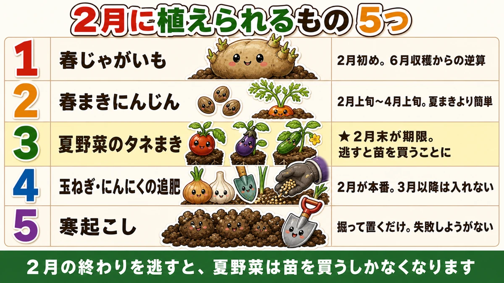
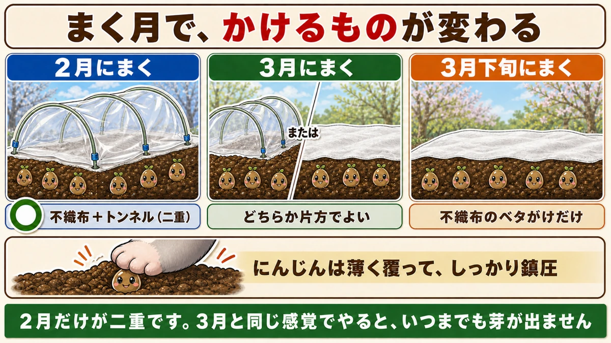
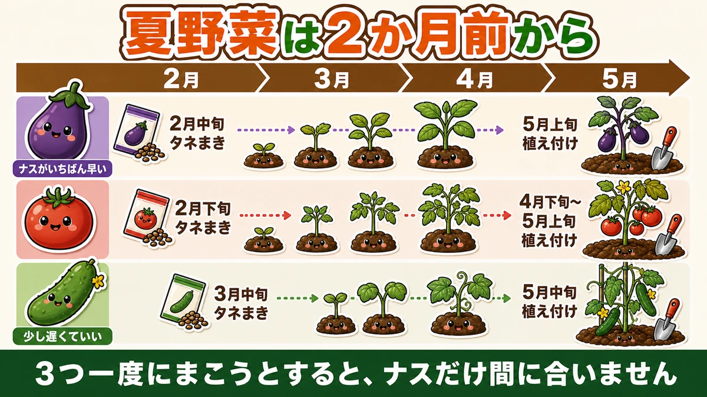

【2月にまく・植える野菜】まだ寒いのに、もう始まっています🌱

🗨️「2月なんて、何もできないでしょ」
🗨️「暖かくなってから始めればいいと思ってた」
🗨️「気づいたら、苗を買う季節になっていた」
どうも、8150（えいこう）です🌱 家庭菜園歴8年、理科の教員免許を持っていて、有機・無農薬で野菜を育てています。
毎月お届けしている「今月まく・植える野菜」、2月号です。
朝は霜柱が立っていて、畑に出るのがおっくうな月ですよね。私も最初の年は、2月をまるごと休んでいました。
でも、これが大きな間違いでした。
先に、この記事でいちばん言いたいことを言っておきます。
★2月の終わりを逃すと、夏野菜は「苗を買う」しかなくなります。
トマトもナスもきゅうりも、植え付けは4〜5月です。でもタネから育てるなら、その2か月前にまかないと間に合いません。逆算すると、2月末なんです☺️

2月に植えられるもの、5つ
1位：春じゃがいも
前回の記事でお話ししたとおり、じゃがいもは6月初めまでに穫らないと暑さで枯れます。そこから逆算すると、★植え付けは2月初めです。
1月から窓辺で芽出し（浴光催芽）をしていたなら、そろそろ植えどきです。芽が5mmほどの、ずんぐりした緑の芽になっていれば合格。ひょろっと白く伸びていたら、光が足りていません。
肥料も石灰も入れなくていいので、うねを立てるだけで準備は終わります。じゃがいもはやせた土のほうがよく穫れる、めずらしい野菜です。
一点だけ気をつけたいのが、植える場所です。ほうれん草の跡地と、ナス科（トマト・ナス・ピーマン）の跡地は避けてください。ほうれん草の跡は土がアルカリに傾いていて、じゃがいもが嫌うそうか病が出やすくなります。ナス科は同じ仲間なので、連作になります。
2位：春まきにんじん
にんじんは1年に2回まけます。夏まきと、春まきです。
そして、★春まきのほうが簡単です。
理由が2つあります。ひとつは、春まきのほうが病気も虫も少ないこと。にんじんはもともと大根より被害の少ない野菜ですが、春まきはさらに少なくなります。
もうひとつが大きくて、★にんじんの最大の失敗要因は「乾燥」だからです。夏にまくと土の表面がすぐ乾いて、タネが干からびます。2月なら、そもそも乾きません。
まけるのは、一般的な地域で★2月上旬〜4月上旬です。
ただし、期限があります。まくのが遅れると★とう立ちします。とう立ちというのは、野菜が花を咲かせる準備に入ることです。こうなると、栄養が全部そちらへ行ってしまって、根は太らず、かたくなります。
にんじんは、ある程度大きくなった株が寒さに当たると「冬を越した」と判断して、花芽を作ります。4月に入ってからまくと、育つ途中で気温が上がりきってしまい、間に合わないんです。狙うなら2月から3月です。
3位：夏野菜のタネまき（★2月末が期限）
これが今日の本題です。
トマト、ナス、きゅうり。この3つは、★植え付けの2か月前にタネをまかないと苗になりません。
4月末に植えたいなら、2月末にまく。それだけの話なのですが、2月の畑を見ていると「まだ早い」と感じてしまうんですよね。私も何年か、この感覚に負けました。
自分でタネから育てるメリットは3つあります。
- 発芽から毎日、変化を見られる（これがいちばん楽しい）
- ★珍しい品種を作れる（苗では売っていない品種がたくさんある）
- 苗を買うより、ずっと安い
3つ目もありがたいのですが、私がいちばん大きいと思うのは2つ目です。ホームセンターの苗コーナーは、どうしても人気品種に偏ります。タネならその何十倍もの選択肢があります。
逆算するとこうなります。
- トマト … 2月下旬にまく → 4月下旬〜5月上旬に植える
- ナス … 2月中旬にまく → 5月上旬に植える（ナスがいちばん早い）
- きゅうり … 3月中旬にまく → 5月中旬に植える（少し遅くていい）
ナスが早いのは、発芽と生育にいちばん高い温度を欲しがるからです。そのぶん苗になるまで時間がかかります。この3つを一度にまこうとすると、ナスだけ間に合いません。
4位：玉ねぎ・にんにくの追肥
秋に植えた玉ねぎとにんにくは、2月に大事な追肥があります。
冬のあいだ止まっていた成長が、2月から動き出します。ここで肥料を入れておくと、春の肥大に間に合います。
★ただし、これが実質的に最後の追肥です。3月以降に入れると、玉ねぎは長もちしなくなります。この話は別の回でくわしくお話しします。
5位：寒起こしとうねの準備
まだ何も植えない場所は、土を掘り返して放っておきます。
寒さに当てると、土のかたまりが凍って、溶けて、また凍る。これを繰り返すうちに、ぼろぼろと崩れていきます。人の手では作れない、ふかふかの土ができます。
土の中で越冬している虫の卵も、掘り出されて凍ったり鳥に食べられたりします。★農薬を使わない畑にとって、寒さは味方です。
コツは、★細かく砕かないことです。スコップで大きなかたまりのまま掘り上げて、そのまま放置します。表面積が大きいほうが、凍って溶けての回数が増えます。きれいにならそうとすると、逆効果になります。
この作業のいいところは、★失敗しようがないことです。掘って、置いておく。それだけで、2月のあいだ寒さが勝手に働いてくれます。
2月まきの防寒は「二重」にする
不織布だけでは足りない月
2月にタネをまくときは、防寒が要ります。ここは月によって、かけるものが変わります。
- ★2月にまく … 不織布のベタがけ＋ビニールトンネル（二重）
- 3月にまく … どちらか片方でよい
- 3月下旬にまく … 不織布のベタがけだけで足りる
2月だけが二重です。3月と同じ感覚でやると、いつまでも芽が出ません。

トンネルの張り方
やることは単純です。
- タネをまいたら、まず不織布を土の上に直接かける（ベタがけ）
- 風で飛ばないよう、ところどころ土で押さえるかピンで留める
- その上にトンネル用の支柱を差して、ビニールをかける
- 裾を土で押さえて、密閉する
密閉と書きましたが、晴れた日の日中はビニールの中が30℃を超えることがあります。芽が出てきたら、端を少し開けて風を通してください。
にんじんは「鎮圧」がすべて
にんじんのタネをまいたら、★上からしっかり押さえてください。
にんじんのタネは小さくて、土を厚くかけると出てこられません。かと言って浅すぎると乾きます。答えは「薄くかけて、しっかり押さえる」です。押さえることでタネと土がぴったりくっついて、水が伝わるようになります。
そして、まいたあとは水やりをしてください。にんじんは水を要求する野菜です。
★冬は「裸のタネ」のほうが有利
コート種子は、冬に不利
前回、タネ袋の読み方の話をしました。コート種子は粘土で丸めたもので、無農薬でも問題ないとお伝えしました。
ただ、★冬だけは事情が違います。
コート種子は、★まわりの粘土が溶けないと発芽しません。冬の低い温度では、この粘土が溶けにくい。ただでさえ発芽が遅い時期に、さらに時間がかかることになります。
2月にまくなら、生種を選ぶ
ですので、2月にまくタネは★生種（裸のタネ）を選ぶほうが有利です。
どうしても手元にコート種子しかないときは、指で軽く潰してからまくという手もあります。粘土にひびが入れば、水が届きやすくなります。
前回「コート種子は問題なし」と書いた話の、冬だけの例外だと思ってください。
2月の管理 ── すでに畑にあるもの
玉ねぎ
- 2月の追肥が、肥大を決めます
- 草をていねいに取ってください。玉ねぎは根が浅いので、草に負けます
- とう立ち（花芽が上がる）した株は、見つけしだい花芽を摘みます
にんにく
- 春の追肥をします
- ★わき芽が出てきたら、早めにかき取ってください。放っておくと分球して、小さいのが2つできます
- 花芽（にんにくの芽）が上がるのは4〜5月なので、まだ先です
スナップエンドウ・そら豆
- 支柱を追加して、つるを絡ませます
- 追肥のタイミングです（この話は別の回でくわしく）
- 株元が枯れていても、抜かないでください。上のほうから復活します
じゃがいも（芽出し中）
- 窓辺に並べたまま、2月初めの植え付けを待ちます
- 芽が5mmほどの緑色になったら合格
- 白くひょろっとしていたら、日の当たる場所へ移してください

2月に、やらないほうがいいこと
暖かい日に、外へ出さない
2月には、ときどき驚くほど暖かい日があります。
その日に、育苗中の苗を外へ出したくなります。日に当てたほうが丈夫になりそうですし、実際そのとおりなのですが、★問題は夜です。
昼に20℃まで上がっても、夜は0℃近くまで落ちます。この落差が苗にはこたえます。私は一度、暖かい日に外へ出したまま取り込むのを忘れて、トマトの苗を全部だめにしました。翌朝、葉が水にひたしたようにぐったりしていて、そのまま戻りませんでした。
外に出すなら、★夕方に必ず取り込む。これだけです。
うねに、直前に肥料を入れない
2月に土づくりをするとき、肥料を入れてすぐ植えたくなりますが、これは避けてください。
有機の肥料は、土の中の生きものが分解してはじめて効きます。そして★分解している2〜3週間のあいだは、土の中で熱が出たり、ガスが出たりします。ここに根を入れると、傷みます。
肥料を入れるなら、★植え付けの2週間前までに済ませてください。2月に入れて3月に植える、という時間差がちょうどいい。1月号でお話しした「1月に入れた肥料が3月に効く」というのは、これと同じ話です。
2月は「逆算」の月
この記事の要点
- ★2月の終わりを逃すと、夏野菜は苗を買うしかなくなる
- 春じゃがの植え付けは★2月初め（6月収穫からの逆算）
- ★春まきにんじんは夏まきより簡単。最大の失敗要因である乾燥が起きない
- トマト・ナス・きゅうりは★植え付けの2か月前にタネまき
- 自分で育てる最大のメリットは★珍しい品種を作れること
- ★2月まきの防寒は不織布＋トンネルの二重。3月なら片方でよい
- にんじんは薄く覆って★しっかり鎮圧、そして水やり
- ★冬は生種（裸のタネ）が有利。コート種子は粘土が溶けにくい
- 玉ねぎ・にんにくの追肥は★2月が本番。3月以降は入れない
全部やろうとしなくて大丈夫です。まずはカレンダーに「2月末・夏野菜のタネまき」とだけ書き込んでみてください。それだけで、今年の夏が変わります🌱
次回は、土の話です。冬のあいだに畑を掘り返しておくと、なぜ春の土がふかふかになるのか。寒さの使い方をお話しします🌱
ここまで読んでくださって、ありがとうございました。
にんじんのタネ
2月上旬から4月上旬までまけます。春まきは夏まきより簡単です。にんじんの最大の失敗要因は乾燥ですが、2月はそもそも土が乾きません。覆土は薄く、そのかわり鎮圧はしっかり。まいたあとの水やりも忘れずに。
![[商品価格に関しましては、リンクが作成された時点と現時点で情報が変更されている場合がございます。]](https://hbb.afl.rakuten.co.jp/hgb/565b7811.82562bc6.565b7812.698bf113/?me_id=1411559&item_id=10000090&pc=https%3A%2F%2Fthumbnail.image.rakuten.co.jp%2F%400_mall%2Fatelier-plum%2Fcabinet%2Fcompass1684807440.jpg%3F_ex%3D240x240&s=240x240&t=picttext "[商品価格に関しましては、リンクが作成された時点と現時点で情報が変更されている場合がございます。]")

不織布
2月にまくときは、ビニールトンネルとの二重がけにしてください。3月なら片方でよく、3月下旬なら不織布だけで足ります。2月だけが二重です。3月と同じ感覚でやると、いつまでも芽が出ません。
![[商品価格に関しましては、リンクが作成された時点と現時点で情報が変更されている場合がございます。]](https://hbb.afl.rakuten.co.jp/hgb/56bc237a.e97551b1.56bc237b.2513ed10/?me_id=1310260&item_id=10000879&pc=https%3A%2F%2Fthumbnail.image.rakuten.co.jp%2F%400_mall%2Fdiokasei%2Fcabinet%2F007fusyokufu%2F12g%2Fimgrc0092049705.jpg%3F_ex%3D240x240&s=240x240&t=picttext "[商品価格に関しましては、リンクが作成された時点と現時点で情報が変更されている場合がございます。]")
トンネル用ビニール
不織布の上にかぶせて二重にします。穴なしのタイプなので、芽が出たら晴れた日は端を開けて風を通してください。日中は中が30℃を超えます。春が終わったら夏野菜の雨よけにも使えます。
![[商品価格に関しましては、リンクが作成された時点と現時点で情報が変更されている場合がございます。]](https://hbb.afl.rakuten.co.jp/hgb/56bc237a.e97551b1.56bc237b.2513ed10/?me_id=1310260&item_id=10001120&pc=https%3A%2F%2Fthumbnail.image.rakuten.co.jp%2F%400_mall%2Fdiokasei%2Fcabinet%2F010maruti-bini-ru%2Fbini-ruopri%2F413190.jpg%3F_ex%3D240x240&s=240x240&t=picttext "[商品価格に関しましては、リンクが作成された時点と現時点で情報が変更されている場合がございます。]")
炭化鶏ふん
有機の肥料は分解に時間がかかります。2月に入れておくと、ちょうど春に効いてくる。植え付けの2週間前までに済ませてください。分解している最中の土に根を入れると傷みます。
![[商品価格に関しましては、リンクが作成された時点と現時点で情報が変更されている場合がございます。]](https://hbb.afl.rakuten.co.jp/hgb/55e7612a.7de1526b.55e7612b.01a50904/?me_id=1214866&item_id=10002182&pc=https%3A%2F%2Fthumbnail.image.rakuten.co.jp%2F%400_mall%2Fkaju%2Fcabinet%2F00714580%2F03462454%2F07486601%2Fimgrc0071643813.jpg%3F_ex%3D240x240&s=240x240&t=picttext "[商品価格に関しましては、リンクが作成された時点と現時点で情報が変更されている場合がございます。]")